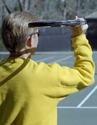
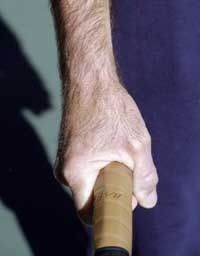
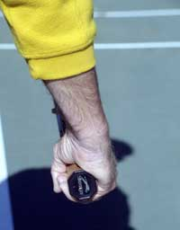
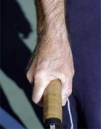
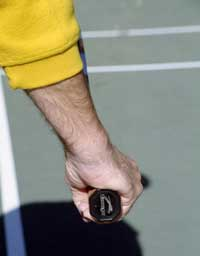
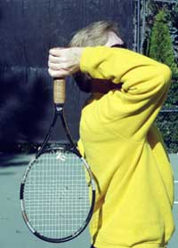
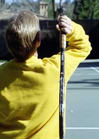
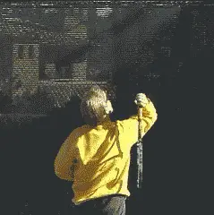
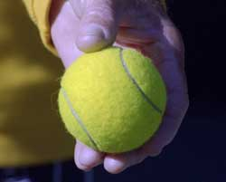
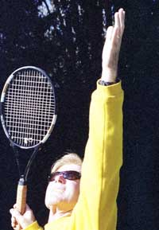

← Bài trước: Preparation | 🏠 Classic Lessons Trang chủ | Bài tiếp: → Private Lessons - The Serve - P2
Bài giảng riêng: Cú giao bóng – Phần 2
Thư viện kiến thức quần vợt thống nhất — Cơ bản, Phân tích kỹ thuật, Thư viện tham khảo và nhiều hơn nữa
Bài giảng riêng: Cú giao bóng – Phần 2
Scott Murphy
Trong Phần 1 của loạt bài này, tôi đã bắt đầu phân tích các vấn đề phổ biến mà tôi thường gặp khi làm việc với tay vợt ở mọi cấp độ. Phần 2 tiếp tục phân tích bắt đầu với khái niệm quan trọng nhưng ít được hiểu, đó là nhịp điệu.

Tạo ra "bình tĩnh trước cơn bão" sẽ tăng cơ hội của bạn có được nhịp điệu giao bóng nhất quán.
Một tay vợt người tạo ra "bình tĩnh trước cơn bão" sẽ có cơ hội tốt hơn để giao bóng nhịp điệu nhất quán. Để đạt được điều này, mọi thứ bạn làm trước khi bắt đầu giao bóng nên được thực hiện một cách mượt mà và bình tĩnh.
Tôi thấy quá nhiều tay vợt bắt đầu động tác giao bóng như thể họ có một chuyến tàu phải bắt! Thông thường, những tay vợt người vội vàng ở đầu có những cú ném bóng không nhất quán và thường kết thúc bằng cách ép bóng hoặc đánh bóng nhỏ.
Có vẻ như những tay vợt người bắt đầu động tác với tay trên mức vai thường là những người có xu hướng "tăng tốc" vào thời điểm sai và tạo ra "cơn bão trước bình tĩnh". Nói cách khác, bạn bắt đầu càng cao thì càng có khả năng có động tác nhanh hơn sẽ phá vỡ nhịp điệu của bạn. Tuy nhiên, bất kể động tác của bạn bắt đầu như thế nào, bạn cần phải bình tĩnh, học cách lưu trữ năng lượng và sau đó để "cơn bão" xảy ra vào giai đoạn phóng.


Bắt đầu với tay quá cao là nguyên nhân gây nên động tác vội vàng.
Đây là một vị trí sẵn sàng tốt, với vợt được hỗ trợ bởi bàn tay ném bóng.
Điểm đầu tiên để vượt qua xu hướng vội vàng là sử dụng một nghi thức trước khi giao bóng. Căn chỉnh và đặt chân, đặt mình song song với lưới và đánh bóng vài lần. Hỗ trợ vợt với bàn tay ném bóng ở vị trí sẵn sàng để giữ tay đánh vợt thư giãn.
Bây giờ hãy quyết định chính xác bạn sẽ đánh loại giao bóng nào và nơi nào. Đừng giao bóng mà không có mục đích! Không nhìn chằm chằm để lộ ý định của mình, hãy vẽ một đường trong mắt bạn đến khu vực bạn muốn bóng rơi, hít sâu một hơi và bắt đầu giao bóng một cách bình tĩnh.

Đùi gập xuống khi tay đi lên.
Đùi gập
Một trong những vấn đề phổ biến nhất mà tôi thấy với những tay vợt người là cú gập đùi không đúng. Tay vợt người sẽ gập đùi vào thời điểm sai, gập quá sâu hoặc không gập đùi gì cả. Cú gập đùi đúng sẽ giữ nhịp điệu giao bóng và cung cấp một cú phóng hiệu quả cho bóng. Đối với ai đó không biết gì, điều rất tự nhiên là gập đùi cùng lúc bạn hạ tay để bắt đầu động tác giao bóng.
Tuy nhiên, điều này là không đúng vì nó sẽ dẫn đến việc thẳng chân quá sớm, trước khi thực sự thực hiện cú đánh. Điều này làm gián đoạn nhịp điệu và loại bỏ bất kỳ cú phóng nào. Điều quan trọng không phải là độ sâu của cú gập đùi - điều này thay đổi theo từng cá nhân. Mà là thời gian.
Đề nghị của tôi là giữ cơ bản thẳng đứng khi bạn bắt đầu giao bóng. Giữ các chuyển động ngoại vi ở mức tối thiểu!
Có một công thức đơn giản để thời gian gập đùi. Gập đùi xuống khi tay đi lên. Cú gập đùi nên đầy đủ nhất ngay sau khi bạn thả bóng.

Nâng gót chân sẽ tăng cú gập đùi và loại bỏ chuyển động dư thừa.
Ban đầu, điều này có thể giống như đập đầu và xoa bụng, nhưng với sự tập trung luyện tập cả trên và ngoài sân, nó sẽ sớm được củng cố.
Thử nghiệm để tìm ra bạn có thể hạ trọng lượng tự nhiên bao nhiêu trong giai đoạn gập. Thư giãn, để trọng lượng rơi xuống và không ép cú gập vì bạn đã thấy Pete Sampras có thể đi bao xa.
Điều này sẽ tối đa hóa năng lượng bạn lưu trữ. Năng lượng này sau đó sẽ tự động phát ra khi bạn đánh lên bóng. Đây là giai đoạn phóng quan trọng để tạo ra sức mạnh.
Một cách khác để tăng cú gập đùi là đồng thời nâng gót chân lên. Bạn có thể gập đùi với chân bằng phẳng nhưng bạn sẽ không làm điều đó nhất quán, vì nó đơn giản là không thoải mái. Ngoài ra, với gót chân lên, bạn thực sự "khóa" chân lại, loại bỏ bất kỳ chuyển động dư thừa nào.
Thế đứng pinpoint có thể dẫn không chỉ đến lỗi chân, mà còn đến mất sức mạnh từ chân và xoay thân.
Không chỉ chuyển động dư thừa có thể tạo ra tiềm năng mất cân bằng mà nó còn có thể dẫn đến một vấn đề thực sự với tôi, đó là lỗi chân. Tôi biết nhiều tay vợt người nghĩ rằng điều này không quan trọng, nhưng sự thật là nó là hành vi gian lận. Nó đặc biệt đáng lo ngại khi tay vợt người thực hiện lỗi chân là người đánh và bắt lưới, vì nó mang lại lợi thế bất công là đến nhanh hơn lưới.
Tôi nghĩ những tay vợt người dễ bị lỗi chân nhất là những người sử dụng thế đứng "pinpoint". Đây là nơi chân sau được kéo lên phía chân trước trước khi phóng. Đôi khi chân sau đó sẽ chạm hoặc vượt qua đường baseline ngay khi cú gập đùi xảy ra. Chúng ta thậm chí còn thấy điều này ở cấp độ chuyên nghiệp.
Trong bất kỳ trường hợp nào, bắt đầu với một chân trên đường baseline hoặc chạm vào đường baseline hoặc sân phía trước nó trước khi đánh bóng là vi phạm quy tắc! Tôi không chắc bạn có gì từ thế đứng này. Thực tế, bạn có thể thực sự mất lợi thế từ chân, và cũng có nguy cơ xoay thân quá sớm. Trong việc giảng dạy của tôi, tôi cố gắng loại bỏ bước này.
Nếu bạn thêm cú gập đùi vào những gì tôi đã viết về cú gập cánh tay và vợt trong phần 1 của bài học này, vị trí "giải thưởng" được hoàn thành. Lưu ý góc của vai. Cú nghiêng vai quan trọng vì nó cho phép kéo dãn cơ thể tốt hơn và khuyến khích đánh lên.

Lưu ý góc nghiêng của vai, khoảng 45 độ so với sân.
Hãy tưởng tượng đánh lên trần nhà thay vì đánh lên tường. Đánh lên tường, nói cách khác, giống như ném bóng, nơi vai vẫn ở trên cùng và cánh tay uốn ở điểm phóng. Khi giao bóng, cú ném vợt dựa trên vị trí nghiêng vai với cánh tay được đẩy lên khi cánh tay đi đến điểm mở rộng hoàn toàn.
Những khác biệt và hình ảnh này rất quan trọng để lưu ý.
Nếu thời gian gập đùi đúng và tay vợt người đánh lên "trần nhà", tất cả năng lượng lưu trữ của bạn sẽ được phát ra và cú phóng sẽ chỉ xảy ra.
Chuyển trọng lượng
Cuối cùng, một số suy nghĩ về chuyển trọng lượng. Tôi thấy quá nhiều người không chuyển trọng lượng gì cả, và trong một số trường hợp thậm chí còn đi ngược lại, chủ yếu vì họ không thiết lập đúng cơ sở hạ tầng dưới chân hoặc ném bóng quá xa để có được bất kỳ động lượng tiến về phía trước nào.

Động tác của vợt nên hướng lên "trần nhà", không phải hướng về phía "tường".
Có hai loại chuyển trọng lượng cơ bản: đẩy lùi và chéo.
Động tác chân đẩy lùi là những gì bạn hiện tại thấy tất cả các tay vợt chuyên nghiệp đang làm. Một khi bạn gập đùi, chúng sẽ cần phải thẳng lại và tùy thuộc vào mức độ gập đùi, điều này có thể dẫn đến từ một cú nhảy nhẹ đến một cú nhảy lớn.
Ngay sau khi bóng được đánh, chân trước hạ xuống phía trước đường baseline, chân sau đá lại và sau đó nhanh chóng đi về phía trước để ổn định và/hoặc đẩy bạn về phía trước.
Điều quan trọng là lưu ý rằng cú nhảy là hoàn toàn tình cờ và kết quả từ sự đẩy lùi của chân đẩy lên mặt đất.
Khi sử dụng động tác chân truyền thống hơn là chéo, chân trước vẫn giữ nguyên vị trí trong quá trình và sau khi đánh bóng và sau đó chân sau sẽ xoay vào sân. Tuy nhiên, hãy chắc chắn rằng bạn không đánh từ chân trước phẳng.

Pete Sampras thể hiện động tác đẩy lùi, hạ chân trước với chân sau đá lại.
Tôi đề nghị động tác chân truyền thống này cho tay vợt người mới bắt đầu, vì nó đơn giản hơn. Nhưng ngay khi các yếu tố khác trong động tác được củng cố, mọi tay vợt người nên bắt đầu phát triển động tác đẩy lùi. Đây là một trong những điều mà mọi tay vợt người có thể học được giống như các tay vợt chuyên nghiệp hàng đầu.
Đó là kết thúc phần hai về cú giao bóng. Nhưng lưu ý cuối cùng. Nếu bạn không yêu thích giao bóng, bạn nên luyện tập cho đến khi bạn yêu thích!
Phát triển một động tác giao bóng tốt sẽ cải thiện khả năng thể thao của bạn và có thể mang lại cho bạn tự tin để nắm quyền kiểm soát trận đấu. Điều này đáng giá sự nỗ lực!
Scott Murphy đến từ Marin County, California, nơi anh bắt đầu chơi quần vợt từ tuổi 5 trong một gia đình yêu thích quần vợt. Cả hai bố mẹ của anh đều là những người ảnh hưởng lớn trong sự phát triển của anh. Anh cũng nhận được sự hướng dẫn từ huyền thoại Marin Hal Wagner và cựu tay vợt hàng đầu Harry Roach. Scott là cựu sinh viên của Đại học California tại Berkeley, nơi anh chơi bóng chày và bóng đá nhưng vẫn tiếp tục làm việc trên kỹ thuật quần vợt của mình với huấn luyện viên nổi tiếng Chet Murphy.
Anh là huấn luyện viên trưởng tại San Domenico/Sleepy Hollow Tennis Club trong hơn 20 năm. Anh cũng đã chỉ đạo Nike Tahoe Tennis Camp tại Granlibakken Resort trong 10 năm. Scott hiện đang giảng dạy riêng tại Ross, Marin County và vào mùa hè anh chỉ đạo Tuscan Tennis Academy mà anh thành lập tại Quarrata, Ý.
Hãy xem trang web của Scott tại scottmurphytennis.net
Bạn có thể liên hệ trực tiếp với Scott tại: scottmrph@yahoo.com
Hình ảnh bổ sung (từ đầu trang/đáy trang của tài liệu nguồn):






Nguồn: tennisplayer.net lưu trữ — Bài giảng riêng - Cú giao bóng - P2.docx (Thư viện giảng dạy của John Yandell, 2002-2022). Được trích xuất và hiển thị dưới dạng HTML cho Tennis Future Lab.